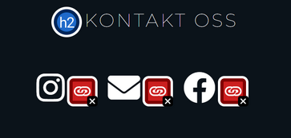
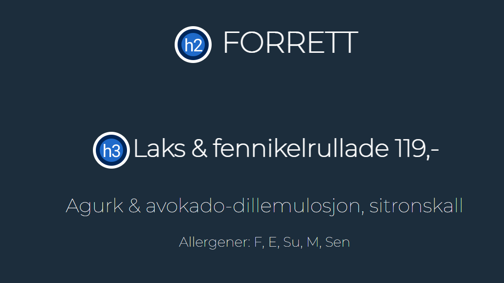
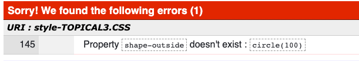

KJØRE GJENNOM KODEN
For å teste kodene i HTML og CSS benyttet vi oss av to forskjellige sider. For å teste HTML-kodene brukte vi Wave., og for CSS-kodene brukte vi W3C CSS validator. Etter tilbakemeldingene vi fikk fra disse sidene, rettet vi på typiske «skrivefeil» vi hadde i koden, som f.eks. et ekstra mellomrom. Vi gjorde endringer på dette og koden ble mer ryddig.
Vi fikk for det meste småfeil, slik som at elementene ikke var avsluttet eller at vi hadde noe overflødig kode. En annen «error» vi fikk da vi brukte den automatiske testen var at ikonene i footeren under «kontakt oss» hadde linker, men ingen tekst ved siden av. Vi valgte å ikke sette tekst ved siden av ikonene, på bakgrunn av at disse er veldig gjenkjennelige for de aller fleste. Vi regnet derfor med at brukeren skjønner hvilke sider ikonene fører til.
I «meny» fikk vi tilbakemelding på at teksten ikke burde skrives i et p element, men heller som h3,h4 osv. Dette endret vi på, slik at koden bli ryddigere. Slik så det ut etter rettingen:
Da vi sjekket CSS i den automatiske testen, fikk vi opp én error. Dette var under topical page, der vi en kode for at teksten skulle gå rundt bilde. Dette var feilkoden vi fikk;
Vi valgte å ikke gjøre noe med dette, fordi vi syntes effekten var kul og fordi vi ikke fant en bedre erstatende kode.
Universell utforming: For at nettsiden skulle oppleves som praktisk og brukervennlig for den generelle befolkningen, valgte vi et enkelt og tidløst design. Vi har valgt sterke kontraster som mørkeblå bakgrunn, med hvit skrift. Skriftstørrelsen er stor og har uthevet skrift på viktige ord. Vi har valgt å ha en mørkeblå hovedfarge, men blånyanser til andre elementer på nettsiden vår enn header og footer. På nettsiden er det få elementer. Noe som gjør det lettere å navigere seg. Det er en navbar som følger med siden selv om du blar nedover. Dette gjør det enkelt for brukeren å navigere seg fram og tilbake hvor enn man skulle ønske. Øverige valg av skriftstørrelse har blitt gjort for at det tydelig skal vises hva som er "viktig" tekst, og
For at overskriften skal passe alle skjermer har vi brukt font-size calc(). For at elementer skal være responsiv til ulike skjermstørrelser har vi benyttet oss av <meta> viewport. Vi har også brukt relative enheter som % og em. Eksempelvis har vi satt width i body til 100% på hver side for å fylle de ulike skjermstørrelser. Videre har vi brukt flex-bokser slik at tekst og bilde vil passe til de fleste skjermstørrelser. Da har vi satt height til auto for oppnå best skalering. Vi har hovedsaklig tatt for oss chrome som nettleser, og testet ut på iPhone 12 pro max i tillegg til standard pc-størrelse. Dette gjorde vi fordi vi så at de fleste skjermstørrelsene i mellom også responderte bra på formatene vi valgte i koden vår.
For at en fremtidig utvikler skal fort få oversikt over CSS-koden, har vi valgt å ha en CSS-side for hver HTML-side. Dette for å gjøre det 1. Lettere for oss som koder i grupper, slik at vi slipper å alle være samlet samme side og 2. Bedre oversikt over endringer. Dersom nettsiden skulle blitt publisert som en reell siden, hadde vi samlet CSS-sidene for å avgrense lastetiden.